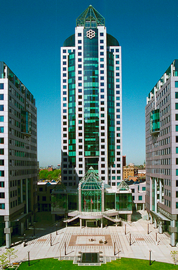

Introduction
For my first coop, I worked at the City of Toronto, in the Cybersecurity Division. The formal name is the Office of the CISO, but I will reference it as the OC in this reflection. This isn't my first time working here, as last summer I also worked at the OC, just not for a coop term. I originally only planned to work here for 4 months, but I am now going to complete both my 2024 coop terms here as I am extending into the fall.Employer
At the OC, the main goal is to secure the City of Toronto's applications and networks, and there are many different teams that support that goal. The team I am working on is called Cyber Engagement, which generally deals with the "frontend" side of operations. We interface with other divisions in the city to help them become or remain more cyber safe. I specifically work on the Strategic Transformation team, which configures solutions to help the OC run. During my time here, I have both programmed tools for many teams in the OC, as well as configured and implemented multiple solutions from vendors contracted by the OC.
Goals
Over my work term, my main goals were to continue working on building tools and infrastructure to best support the teams of the OC. I generally wanted to do the same thing as I did last year, but also gain more experience working on more complex projects. Here are some of my main goals:I wanted to work on a project that tested my knowledge and experience
Last summer I mainly worked with Jira automation and small tools in VBA. This summer I wanted to go beyond that and expand my experience to developing permanent solutions. I did this by leading the configuration of a tool called Process Unity, to help with our GRC (Governance, Risk Management, and Complience) pipelines.
I wanted to work with experienced professionals and get a view into actual project development
Last summer I worked with the client side team of the OC. I helped them build tools that helped that one team. This summer I wanted to actually be a part of a project team that made a tool that would help the whole OC / City. I was able to accomplish this by reaching out to my supervisors and asking about possible oppertunites I could be a part of, allowing me to be a part of a project team.
I wanted to lead meetings and be able to convey information to multiple different groups of people
I generally am someone who is comfortable speaking in meetings about things that I am confident about. This summer I wanted to lead workshops and meetings, to gain a better understanding of the topic and how to best explain it to multiple different groups of people. I learned that explaining something to one group of people can be vastly different than explaining that same thing to another group. It all comes down to their familiarity with the concept, and how you are able to explain it.